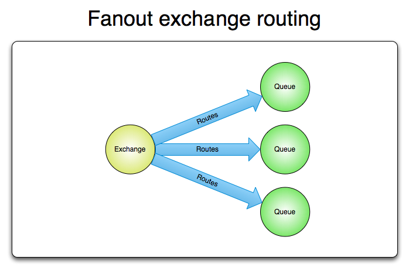
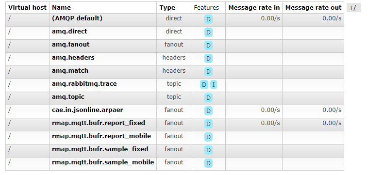
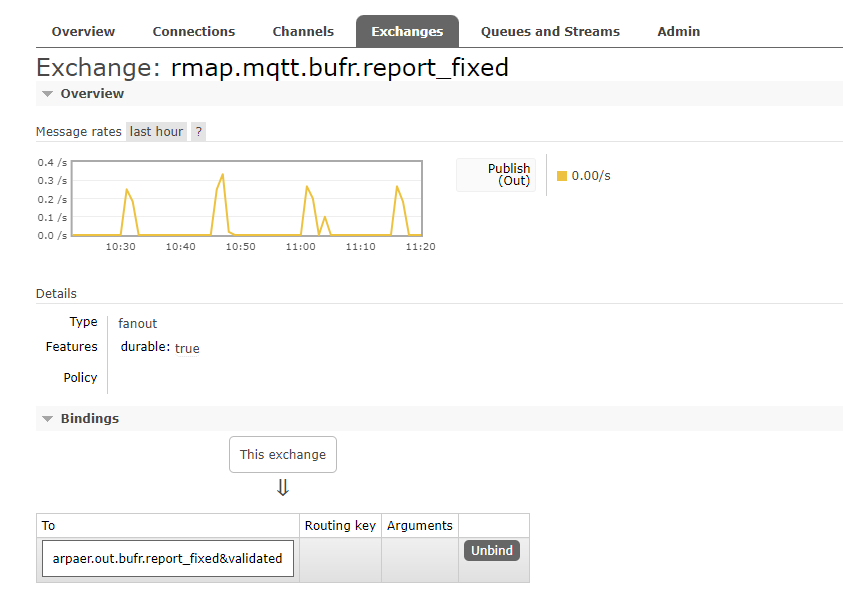
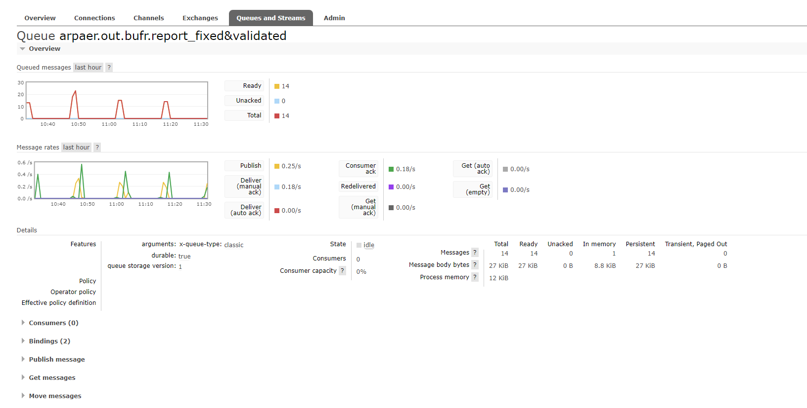

Handover RMAP
Obiettivo del documento¶
Il presente documento ha lo scopo di raccogliere le informazioni principali fornite durante gli incontri di formazione, principalmente relativi alla gestione sistemistica dell’attuale infrastruttura, tenuti dall’attuale referente del progetto RMAP di Arpae SIMC, P.Patruno.
Nella sezione Link utili sono disponibili i riferimenti sia alla documentazione del progetto RMAP che alla documentazione ufficiale dei componenti principali da cui è costituito.
Server¶
Riportiamo di seguito la lista dei server che compongono l’infrastruttura RMAP, al momento ospitata presso il datacenter Arpae SIMC a Parma, oltre ad un diagramma di funzionamento condiviso da P.Patruno, inserito nel paragrafo successivo:
Hostname |
IP (interno) |
IP (pubblico) |
Note |
rmap8-test .arpaepr.local |
172.19.99.210 |
test.rmap.cc [ 89.39.237.156] |
Server di test |
rmap8 .arpaepr.local |
172.19.99.211 |
rmap.cc [ 89.39.237.157] |
Server produzione per C rowdsourcing* |
rmap8-devel .arpaepr.local |
172.19.99.212 |
port forward da rmap.arpae.it, alias dati2.ARPAE.IT [ 89.39.237.155] |
Server produzione (data ingestion) |
rmap8-backend .arpaepr.local |
172.19.99.213 |
proxy 80 443 da rmap.arpae.it, alias dati2.ARPAE.IT [ 89.39.237.155] |
Server produzione (backend) |
* gestisce esclusivamente dati che non siano istituzionali (gestiti da Arpae), per esempio scuole, progetti esterni, e così via.
Data ingestion¶
Corrisponde al server attualmente denominato rmap8-devel.arpaepr.local.
Assolve esclusivamente alla funzione di data ingestion.
{kind=link}
I dati che arrivano dalle stazioni meteo vengono autorizzati, tramite meccanismo di autenticazione, e vengono inseriti in una coda dedicata dal broker AMQP.
Le stazioni meteo sono suddivise in due macro gruppi:
stazioni Stima V3: comunicano in GSM in chiaro, tramite protocollo MQTT con il broker MQTT (mosquitto)
stazioni Stima V4: comunicano in TLS con PSK (Pre-Shared Key), tramite protocollo MQTT TLS (PSK) con il broker MQTT (mosquitto)
Il broker MQTT (mosquitto) è in grado di gestire direttamente le PSK però le stazioni hanno bisogno di ricevere alcune informazioni, per esempio la configurazione della stazione stessa, fornita non solo da mosquitto ma anche da apache (demone httpd che è attivo solo sul server di backend).
Mosquitto comunica tramite un terzo protocollo MQTTS (MQTT con SSL/TLS su Websocket) utilizzato per funzionalità di monitoraggio delle stazioni meteo: gli operatori che gestiscono le varie stazioni meteo possono attivare in loco, tramite un semplice broker (MQTTS su Websocket), il monitoraggio su websocket per verificare i messaggi pubblicati dalla stazione sul broker (per ovviare all’assenza di un consumer dedicato).
Tutte le porte su cui è in ascolto il broker di Mosquitto sono esposte in quanto devono essere raggiungibili dalle varie stazioni meteo per pubblicare (Stima V3 e Stima V4) oppure per il monitoraggio. Rimandiamo alla sezioni Porte e Protocolli per un riepilogo delle varie porte utilizzate.
A pieno regime, RMAP sfrutterebbe 4 demoni che gestiscono 4 diverse tipologie di stazioni-pubblicazioni:
stazioni fisse che pubblicano report
stazioni mobili che pubblicano report
stazioni fisse che pubblicano campionamenti (sample)
stazioni mobili che pubblicano campionamenti (sample)
Nell’attuale istanza RMAP in uso per Arpae è presente e attivo un solo demone (mqtt2ampqd) che legge i messaggi da MQTT e li pubblicano su delle code configurate su RabbitMQ (per stazioni fisse che pubblicano report).
E’ presente anche un altro demone (report2observationd) che effettua una trasformazione dei messaggi che arrivano inizialmente compressi, li decomprime e li pubblica nuovamente, per cui arrivano sul broker MQTT in forma decompressa.
I due demoni sono gestiti e avviati tramite monit in maniera automatica.
In /etc/monit.d/ è presente il file di configurazione per l’istanza RMAP (denominato rmap). All’interno del file di configurazione di monit risultano decommentate le righe relative a:
controllo del processo del demone report2observationd ed eventuale riavvio nel caso non sia attivo
controllo di mosquitto, con verifica della porta 1883 di mosquitto; se non risponde su quella porta viene riavviato il servizio
controllo del processo mqtt2ampqd_report_fixed_v1 (gestito dal demone mqtt2ampqd); se non presente avvia il processo in automatico con i parametri di avvio (es. versione rmap, percorso del file pid, percorso file log, ecc...)
I file di configurazione (es. per monit) ma anche per le altre entità configurate (es. rabbitmq e mqtt) sono pubblicati anche su git, all’interno del progetto indicato nella sezione Link utili.
E’ possibile verificare lo stato dei servizi gestiti tramite monit, eseguendo il comando monit status, collegandosi in ssh sul server.
Il broker Mosquitto (MQTT) è configurato tramite autenticazione, in modo da autorizzare chi può fare cosa: ogni stazione può pubblicare solamente sul topic mqtt per cui è stata configurata, in base a latitudine e longitudine. Il meccanismo di autenticazione non viene gestito direttamente da mosquitto ma da un componente esterno di autenticazione a cui il servizio mosquitto manda la richiesta ogni volta che una stazione prova ad autenticarsi.
Il servizio di autenticazione, gestito dal server di backend (rmap8-backend.arpaepr.local) si basa su apache (httpd), nel caso in cui non sia disponibile, il servizio di autenticazione ricade su un file statico. Il file statico, utilizzato come sistema di autenticazione di backup, viene sincronizzato tramite procedura schedulata descritta nella sezione Script sync, dal server di backend verso il server di data ingestion (componente principale che deve sempre essere disponibile) in modo da consentire comunque l’autenticazione delle stazioni anche in caso di failure del backend (il sistema non consentirà per esempio l’aggiunta o lo spostamento di stazioni ma non si bloccherà la pubblicazione dei dati).
I dati, una volta autenticate le stazioni sul backend e pubblicati tramite il broker MQTT, finiscono nelle code (Queue) di RabbiMQ. Da qui poi i dati pubblicati vengono prelevati da un servizio Arpae (sottoscritto ad una coda dedicata su RabbitMQ, publish-subscribe) che li trasferisce nel proprio archivio.
RabbitMQ¶
L’uso di RabbitMQ sul server di data ingestion è piuttosto semplice e basato su interfaccia web (plugin attivato per RabbitMQ). Riportiamo di seguito un diagramma di esempio, anche se nell’istanza RMAP in uso per Arpae, al momento, non sono previste nemmeno le Routes, per cui l’implementazione si basa esclusivamente su Exchanges → Queue:
I messaggi vengono pubblicati all’interno dell’Exchange e poi prelevati dalla Queue in cui sono stati inseriti.
{kind=link}
L’accesso all’interfaccia web di RabbitMQ per la data ingestion è disponibile al seguente url (tramite vpn e credenziali di amministratore in possesso di Arpae):
http://rmap8-devel.arpaepr.local:15672
All’accesso viene visualizzata la dashboard con statistiche varie, messaggi pronti, connessioni, ecc…
{kind=link}
Il numero di messaggi in stato Ready può essere un buon indicatore in caso di problemi, se il numero cresce in maniera importante e i messaggi non vengono scodati, significa che potrebbe esserci un problema lato client (per esempio Arpae) che non sta andando a recuperare i dati pubblicati nella propria coda.
Nella sezione Exchanges (entità AMQP a cui vengono inviati i messaggi e li instradano in zero o più code) è possibile gestire quelli esistenti oppure configurarne di nuovi.
Sono presenti alcuni Exchange creati di default all’avvio di RabbitMQ che sono rimasti ma che in realtà non vengono utilizzati (denominati amq.*). Quelli creati per l’istanza in uso da Arpae sono denominati rmap.mqtt.* (sono stati definiti i 4 Exchange completi, ma come indicato in precedenza è attivo solo quello relativo a report per stazioni fisse) e cae.*.
{kind=link}
Cliccando sul nome del Exchange si viene rimandati al dettaglio della sua configurazione, allo stato di pubblicazione/sottoscrizione dei messaggi, alla pubblicazione dei messaggi o cancellazione del Exchange e più importante alla definizione dei Bindings, ovvero dove vengono indirizzati i messaggi pubblicati (la Queue di destinazione da impostare in fase di configurazione del Exchange nel caso in cui i dati debbano essere intercettati):
{kind=link}
Exchanges → Queue
rmap.mqtt.bufr.report_fixed → arpaer.out.bufr.report_fixed&validated
Nella sezione Queues & Streams vengono gestite e definite le code di destinazione dei messaggi collezionati dal Exchange.
Qui posso controllare il numero di messaggi disponibili, il totale, ecc… Solitamente se tutto funziona correttamente la coda dovrebbe risultare sempre vuota, in quanto il consumer (per esempio Arpae) ha recuperato correttamente tutti i messaggi pubblicati, svuotando quindi la Queue.
In questa sezione è possibile spostare i messaggi da una coda ad un’altra (Move messages), cancellare definitivamente la coda e tutti i suoi messaggi (Delete Queue) oppure cancellare tutti i messaggi all'interno della coda (Purge Messages). Ad ogni coda è associato un servizio e una direzione, secondo una nomenclatura specifica.
{kind=link}
Nella sezione Admins vengono definiti gli utenti e il loro livello di accesso (secondo una precisa definizione di regexp). Per l’utente arpaepr sono le seguenti:
virtual host utilizzato nell’istanza Arpae è il default, ovvero “ / ”
non ha permessi di configurazione (campo vuoto in fase di definizione)
ha permessi di lettura e scrittura in tutto ciò (exchange e queue) che inizia con il suo nome utente (^arpaer..*), in cui potrà leggere e pubblicare dati
Definizione nuovo utente¶
La definizione di un nuovo external provider (consumer) è composta da:
creazione utente con privilegi write e read con regular expression ^utente..*
creazione queue con eventuale Message TTL (se vuoto è indefinito, altrimenti imposta il valore massimo in secondi di permanenza dei messaggi nella queue, una volta superato quel valore i messaggi vengono cancellati e sono irrecuperabili)
creazione exchange con binding alla queue creata al punto precedente
La sintassi utilizzata nella definizione di exchange e code è autoesplicativa e basata sul nome definito per l’utente (consumer):
exchange → utente.in.formato.descrizione
queue → utente.out.formato.descrizione
utente = nome utente definito in fase di creazione
in/out= direzione operazione (in per exchange, out per queue)
formato= tipologia di output (es. json, xml, bufr)
descrizione= label descrittiva del processo
Ogni utente ha accesso in lettura e scrittura a exchange e code che iniziano con il Name del proprio utente.
Per CAE è stato attivato un exchange, al momento della redazione del presente documento ancora in fase sperimentale, in cui CAE pubblica dei dati (cae.in.jsonline.arpaer) che vengono poi inseriti nella queue associata a quel exchange (arpaer.out.jsonline.rete_cae_arpaer) in cui il consumer è Arpae che se li va a leggere (il nome della coda rispetta il regexp ^arpaer..* che la rende disponibile all’utente arpaer). In questa coda è definito il parametro Message TTL con un valore di 604800000 (secondi) pari a 7 giorni, per cui tutti i messaggi pubblicati al suo interno rimarranno disponibili nella coda per 7 giorni, superata tale soglia la coda verrà ripulita e i dati persi definitivamente.
Backend¶
Corrisponde al server attualmente denominato rmap8-backend.arpaepr.local.
Assolve principalmente alla funzione di autenticazione delle stazioni, oltre che alle seguenti funzioni/servizi (di cui riportiamo, oltre allo stato, anche il riferimento alla documentazione online):
Configurazione delle stazioni (presente e attivo)
Registrazione utenti (presente e NON attivo)
Visualizzazione dei dati (presente e attivo)
Cosudo (presente e NON attivo)
Inserimento manuale dei dati (presente e NON attivo)
RainBO (presente e NON attivo)
Interfaccia web (presente e attivo)
Script sync¶
Per mantenere allineato il processo di autenticazione sul broker MQTT e consentire l’autenticazione delle stazioni, anche in caso di failure del server di backend, è stato implementato un job pianificato ogni ora che copia dal server di backend (rmap8-backend) verso il server di data ingestion (rmap8-devel), i seguenti file:
file.pwd
aclfile
file.psk
Una volta copiati i file in /etc/mosquitto/ sul server di data ingestion, lo script effettua un reload del servizio mosquitto.service in modo che i file aggiornati vengano recepiti correttamente. In caso di errore durante reload del servizio di mosquitto viene inviata una mail a sistemi@yacme.com.
Log¶
I log relativi ai processi coinvolti in RMAP (mqtt2ampqd e report2observationd) si trovano nella directory /var/log/rmap/.
Il file di log relativo allo script di sincronizzazione (su rmap8-devel) viene scritto in /root/script_sync_backend/logs/ e viene ripulito e ricreato quando la sua dimensione supera i 2MB.
Porte e protocolli¶
Vengono indicate di seguito le porte e relativi servizi in uso per RMAP:
Porta |
Pro tocollo |
Server |
S ervizio |
Rmap Server |
Rmap Data In gestion |
Rmap Backend |
80 |
HTTP |
apache |
d ownload conf e f irmware (Stima V3) |
X |
X |
|
442 |
HTTPS TLS con pre shared Key |
stunnel |
d ownload conf e f irmware (Stima v4) |
X |
X |
|
443 |
HTTPS (S SL/TLS) |
apache |
g estione backend e v isualiz zazione dati |
X |
X |
|
5925 |
HTTP |
monit |
monit oraggio demoni RMAP |
X |
X |
|
1883 |
MQTT |
mo squitto |
pubbli cazioni dati s tazione (Stima V3) |
X |
X |
|
5671 |
AMQPS (S SL/TLS) |
ra bbit-mq |
pubbli cazione e distri buzione dati |
X |
X |
|
5672 |
AMQP |
ra bbit-mq |
pubbli cazione e distri buzione dati |
X |
X |
|
8883 |
MQTTS TLS con pre shared Key |
mo squitto |
pubbli cazione s tazioni (Stima V4) |
X |
X |
|
8884 |
MQTTS (S SL/TLS) WE BSOCKET |
mo squitto |
monit oraggio MQTT da web |
X |
X |
|
15672 |
HTTP |
ra bbit-mq |
Man agement Plugin |
X |
X |
X |
Best practice e possibili criticità¶
Vengono indicate di seguito le principali criticità di funzionamento da abbinare ad eventuali richieste di funzionamento, riportate da P.Patruno in base alle esperienze affrontate durante gli anni:
Down dell'intero sistema
può causare un ritardo nell’acquisizione dei dati da MQTT ed eventuale intasamento di dati alla riattivazione (70 invii contemporanei di una consistente mole di dati); i dati aumentano ogni 15 minuti
(non dovrebbe mai accadere) può comportare l’ipotetica perdita di dati in acquisizione da external provider tramite AMQP (dipende da come gestisce l'invio il provider)
Rottura/malfunzionamento del servizio autenticazione sul backend
in caso di rottura/malfunzionamento può comportare la caduta dell'autenticazione su file statico (backup statico sulla vm di data ingestion) che rimane immutabile fino a ripristino
se il backend rimane in funzione può presentarsi come situazione estrema, ma molto estrema, la dissociazione tra le configurazioni in stazione e le configurazioni sul server di data ingestion con possibile perdita di dati relativa solo alle modifiche fatte nel backend
Rottura/malfunzionamento del broker AMQP
può comportare la perdita di dati acquisizione da MQTT che sono recuperabili tramite l’esecuzione di complesse remote procedure call (RPC) sulle stazioni oppure fisicamente dalle SDcard in loco sulla stazione
può comportare la perdita di dati acquisizione da external provider AMQP (dipende da come gestisce l'invio l'external provider)
Rottura/malfunzionamento del broker MQTT
può comportare un ritardo nell’acquisizione dati da MQTT ed eventuale intasamento di dati alla riattivazione (70 invii contemporanei di una consistente mole di dati); i dati aumentano ogni 15 minuti
può comportare la perdita di dati acquisizione da MQTT che sono recuperabili tramite l’esecuzione di complesse remote procedure call (RPC) sulle stazioni oppure fisicamente dalle SDcard in loco sulla stazione
Rottura/malfunzionamento dei demoni mqtt2amqp
può comportare la perdita di dati acquisizione da MQTT che sono recuperabili tramite l’esecuzione di complesse remote procedure call (RPC) sulle stazioni oppure fisicamente dalle SDcard in loco sulla stazione
Di seguito le best practice suggerite da P.Patruno nel caso in cui si presentino alcune delle anomalie indicate in precedenza:
S***pegnimento server*
prima spegnere server rmap8-devel (data ingestion) e poi spegnere server rmap8-backend (backend)
Accensione server
accendere prima il server rmap8-backend (backend) e successivamente il server rmap8-devel (data ingestion)
Sequenza spegnimento servizi vari
(facoltativo) se fosse possibile disattivare per prime le porte di rete esterne, spegnendo le connessioni dall'esterno come prima attività (al momento NON attivo)
broker MQTT (mosquitto.service)
demoni
broker AMQP (rabbitmq-server.service)
backend (httpd e postgres)
Sequenza avvio servizi vari
backend (httpd e postgres)
broker AMQP (rabbitmq-server.service)
demoni
broker MQTT (mosquitto.service)
(facoltativo) se fosse possibile attivare per ultime le porte di rete esterne, attivando le connessioni dall'esterno solo a sistema completamente avviato (al momento NON attivo)
Riduzione del danno in caso di rottura/malfunzionamento di una delle componenti
malfunzionamento/rottura autenticazione → disattivare tutto il backend
malfunzionamento broker MQTT → disattivare broker MQTT (o porte di rete esterne)
malfunzionamento/rottura broker AMQP → disattivare broker MQTT (o porte di rete esterne)
malfunzionamento/rottura demoni → disattivare broker MQTT (o porte di rete esterne)
A***vvio o riavvio manuale processi*
il consiglio è utilizzare monit, già configurato per il riavvio automatico dei servizi
monit status: mostra la lista dei processi gestiti da monit e il loro stato
monit start/restart <nome_processo>: consente di avviare/riavviare manualmente un processo tra quelli gestiti da monit